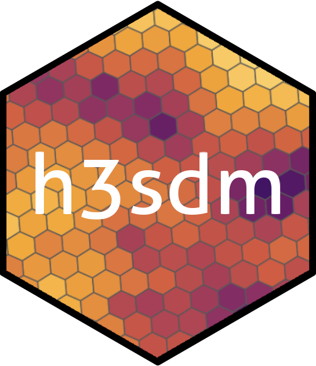

h3sdm: Machine learning–based spatial species distribution modeling and habitat/landscape analysis using H3 spatial grids.
h3sdm is an R package for species distribution modeling (SDM) and habitat analysis using hexagonal grids based on H3.
It provides a consistent spatial framework to combine species occurrence data with environmental predictors and landscape metrics, enabling both ecological modeling and habitat characterization.
Key features include:
Conversion of point occurrence data into H3-based spatial grids.
Extraction of environmental and landscape predictors at different resolutions.
Support for multiple modeling approaches (e.g., logistic regression, GAMs, Random Forest, XGBoost).
Tools for visualizing model predictions and habitat structure.
By leveraging H3 grids, h3sdm makes it easy to bridge species distribution modeling and landscape ecology in a scalable way.
You can install the development version of h3sdm from GitHub with:
# install.packages("pak")
pak::pak("ManuelSpinola/h3sdm")
#> ✔ Updated metadata database: 7.57 MB in 10 files.
#> ℹ Updating metadata database✔ Updating metadata database ... done
#>
#> → Will update 1 package.
#> → Will download 1 package with unknown size.
#> + h3sdm 0.1.0 → 0.1.0 👷🏾♂️🔧 ⬇ (GitHub: ba82a61)
#> ℹ Getting 1 pkg with unknown size
#> ✔ Got h3sdm 0.1.0 (source) (430.62 kB)
#> ℹ Packaging h3sdm 0.1.0
#> ✔ Packaged h3sdm 0.1.0 (455ms)
#> ℹ Building h3sdm 0.1.0
#> ✔ Built h3sdm 0.1.0 (2.7s)
#> ✔ Installed h3sdm 0.1.0 (github::ManuelSpinola/h3sdm@ba82a61) (17ms)
#> ✔ 1 pkg + 225 deps: kept 224, upd 1, dld 1 (NA B) [17.3s]
# install.packages("remotes")
remotes::install_github("ManuelSpinola/h3sdm")
#> Using github PAT from envvar GITHUB_PAT. Use `gitcreds::gitcreds_set()` and unset GITHUB_PAT in .Renviron (or elsewhere) if you want to use the more secure git credential store instead.
#> Skipping install of 'h3sdm' from a github remote, the SHA1 (ba82a617) has not changed since last install.
#> Use `force = TRUE` to force installation
# install.packages("devtools")
devtools::install_github("ManuelSpinola/h3sdm")
#> Using github PAT from envvar GITHUB_PAT. Use `gitcreds::gitcreds_set()` and unset GITHUB_PAT in .Renviron (or elsewhere) if you want to use the more secure git credential store instead.
#> Skipping install of 'h3sdm' from a github remote, the SHA1 (ba82a617) has not changed since last install.
#> Use `force = TRUE` to force installationSee the full workflow in the h3sdm vignette.